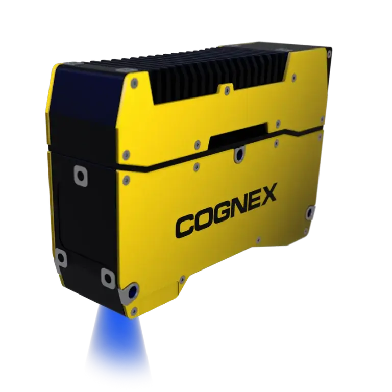

3D 높이 정보 분석
대상의 높이, 단차와 표면 형상을 데이터로 취득해 판정합니다.
3D Vision · AI
표면 색상뿐 아니라 높이와 형상 정보를 활용해 검사, 측정과 가이던스를 수행하는 AI 기반 3D 비전 시스템입니다.

01 · Overview
In-Sight L38은 레이저 프로파일 기반 3D 데이터를 취득해 높이 차이, 체적 형상, 비드 상태처럼 2D 영상만으로 판단하기 어려운 항목을 검사합니다. 대상 재질과 표면 반사, 이동 방향을 고려해 스캔 조건을 정하고 2D·3D 도구를 함께 활용할 수 있습니다.
자동차 부품, 배터리, 전자 조립, 접착·실링, 정밀 가공처럼 높이 정보와 단차가 품질 기준이 되는 공정에 적용합니다.
02 · Key Features
대상의 높이, 단차와 표면 형상을 데이터로 취득해 판정합니다.
형상 편차가 있는 대상에서도 결함과 정상 변동을 구분하도록 검토할 수 있습니다.
평면 특징과 깊이 정보를 한 검사 흐름에서 함께 활용할 수 있습니다.
03 · Application Fit
폭, 높이, 끊김과 위치를 함께 확인해야 하는 도포 공정입니다.
평면 영상에서는 구분하기 어려운 눌림, 들뜸과 높이 차이를 검사합니다.
부품 위치와 자세 정보를 로봇 좌표로 전달해야 하는 자동화 공정입니다.
04 · Specification Guide
제품 선정에 앞서 아래 항목을 기준으로 검사 조건과 옵션을 확인합니다.
레이저 프로파일 기반 3D 비전 시스템
3D 취득, 높이·형상 분석, AI 및 2D 도구 조합
대상 폭, 높이 범위, 표면 반사, 이동 방식, 필요한 정밀도
적용 모델 및 옵션에 따라 상이합니다. 해상도, 렌즈, 조명, 통신과 세부 사양은 검사 대상 및 설치 조건을 확인한 뒤 문의 바랍니다.
05 · Inspection Tasks
06 · ASPEC Engineering
단품 공급만이 아니라 실제 생산라인에서 안정적으로 작동하도록 광학계, 제어와 소프트웨어를 함께 구성합니다.
07 · References & Related Products
ASPEC의 AI·OCR·바코드·정렬 검사 사례에서 검사 방식과 시스템 구성 방향을 확인할 수 있습니다. 공개 사례는 특정 제품 모델 사용을 의미하지 않으며 실제 모델은 현장 조건에 따라 선정합니다. 구축사례 라이브러리 보기
08 · FAQ
색상이나 명암만으로 결함이 드러나지 않고 높이 차이가 핵심 판정 기준이라면 3D 검토가 필요합니다. 실제 샘플에서 높이 대비가 확보되는지 확인합니다.
표면 반사와 각도에 따라 데이터 품질이 달라집니다. 스캔 방향, 설치 각도와 모델 범위를 실제 샘플로 검증해야 합니다.
3D 프로파일을 구성하려면 센서나 대상의 상대 이동이 필요합니다. 기존 컨베이어 또는 별도 이송축과의 동기 방식을 함께 설계합니다.
09 · Project Inquiry
검사 대상, FOV, WD, 택타임, 불량 유형을 알려주시면 카메라·렌즈·조명과 시스템 구성을 함께 검토해드립니다.